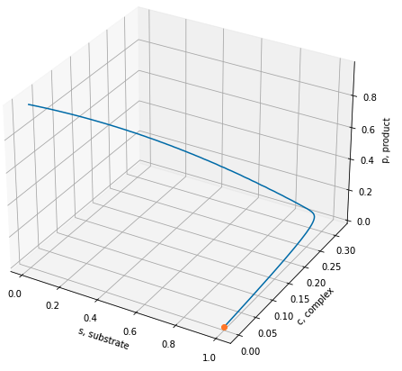
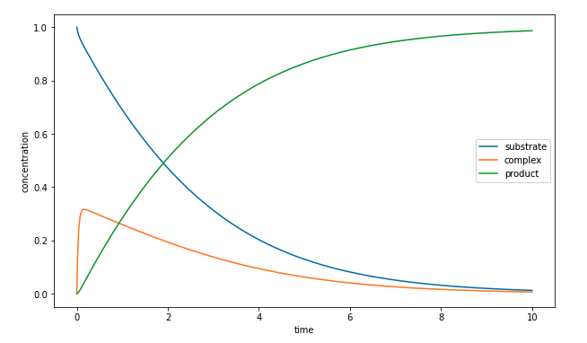
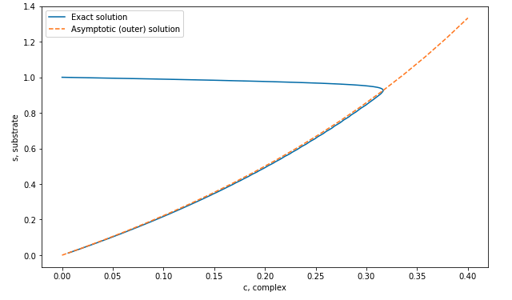
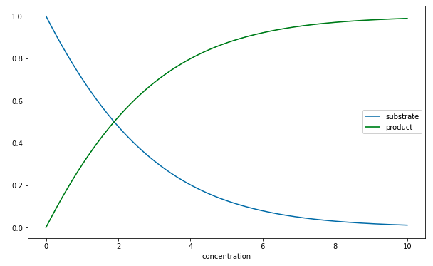

24 Fast-slow dynamics for higher-order systems
In the last two lectures, we discussed the use of toy models that exhibit fast-slow dynamics. These have been used to posit possible changes in behaviour in ice ages, where historical records confirm that multiple periodic states are possible.
It is important to note that the van der Pol oscillator we have studied, which is equivalent to two first-order differential equations, is really not that unusual, and systems of (three or more) differential equations will often exhibit the kind of fast-slow behaviours observed. This occurs commonly in applications much more general than climate or geoscience—of course, if your view is to concentrate to models of Planet Earth, you can expect this kind of behaviour whenever you have moderately complicated systems of coupled oscillators describing the planet!
As as means of providing you with additional toy examples, let us examine a model used in studying chemical reactions. Consider an enzyme-mediated chemical reaction given by \[ \ce{S + E <=>[k_1][k_2] C ->[k_3] P + E}, \] where \(S\) is the “substrate” reactant and \(P\) is the concentration of the product. The enzyme \(E\) is a compound that allows for an immediate reaction step that leads to the overall reaction, which in this case is \(S \to P\). The intermediate substance is \(C\), the complex. The point here is that dependent on the rate constants, \(k_1\), \(k_2\), \(k_3\), and the amount of each substance, the overall chemical reaction may be coarse-grained so that you only observe \(S \to P\) (this is the slow dynamics). We can consider the dynamics of the three substances and derive the following system of three equations \[ \begin{align} \frac{\mathrm{d}s}{\mathrm{d}t} &= -s(1 - c) + \lambda c, \qquad & s(0) &= 1, \\ \epsilon\frac{\mathrm{d}c}{\mathrm{d}t} &= s(1 - c) - \mu c, & c(0) &= 0, \\ \frac{\mathrm{d}p}{\mathrm{d}t} &= (\mu - \lambda)c, & p(0) &= 0. \end{align} \tag{24.1}\] where the three substances have been suitably non-dimensionalised. The key is to assume that the parameters \(\lambda = O(1) = \mu\), while \[ \epsilon = \frac{\text{initial enzyme}}{\text{initial substrate}} \ll 1. \]
Here is a typical numerical calculation found in the script here.

Here is the same solution but now plotted as a function of time.

The above graph suggests that there is a boundary layer for the complex near \(t = 0\).
24.1 Slow analysis
We thus expand the solutions in the typical way, setting \[ \begin{align} s(t) &= s_0(t) + \epsilon s_1(t) + \ldots \\ c(t) &= c_0(t) + \epsilon c_1(t) + \ldots \\ p(t) &= p_0(t) + \epsilon p_1(t) + \ldots \end{align} \] This yields at leading order, \[ \begin{align} \frac{\mathrm{d}s_0}{\mathrm{d}t} &= -s_0(1 - c_0) + \lambda c_0, \\ 0 &= s_0(1 - c_0) - \mu c_0,\\ \frac{\mathrm{d}p_0}{\mathrm{d}t} &= (\mu - \lambda)c_0, \end{align} \tag{24.2}\]
The second equation yields the slow manifold, for which we expect \[ s(c_0) = \frac{\mu c_0}{1 - c_0}. \tag{24.3}\]

24.2 Fast dynamics near the initial condition
As with our van der Pol example, the initial condition, where \(c(0) = 0\) and \(s(0) = 1\), does not lie on the slow manifold above. Therefore we expect that there is a boundary layer where the system rapidly begins from the initial condition and tends to the slow manifold. The distinguished scaling on time can be confirmed to be \[ t = \epsilon^\alpha T = \epsilon T, \] where \(\alpha = 1\). We then set \[ s = S(T) \qquad c = C(T), \] for our new unknowns within this later. Under the scaling, the first two ODEs in (Equation 24.1) become \[ \begin{align} \frac{\mathrm{d}S_0}{\mathrm{d}T} &= 0, & S_0(0) &= 1 \\ \frac{\mathrm{d}C_0}{\mathrm{d}T} &= S_0(1 - C_0) - \mu C_0. & C_0 &= 0. \end{align} \] Therefore, you see that the leading-order value of \(S\) is expected to be constant, and it remains at its initial value, \[ S_0(T) \equiv 1. \] Although we could solve for the concentration of \(c\) or \(C\), this turns out not to be necessary. It should first be remarked that as the outer solution, \(s \sim s_0\), tends to the initial condition, \(t \to 0\), we should have \[ \lim_{t \to 0} s_0(t) = 1 = \lim_{T\to \infty} S_0(T). \] Compare this with the condition (Equation 12.2) when we initially studied the method of matched asymptotics. Therefore, even though there is a boundary layer necessary for the concentration \(c\) near \(t = 0\), we do not need to resolve it.
24.3 An equation for the substrate and product
Take now (Equation 24.3), which yields \[ c_0 = \frac{s_0}{\mu + s_0}, \] and substitute this into the first and third equations (Equation 24.2). This gives \[ \begin{align} \frac{\mathrm{d}s_0}{\mathrm{d}t} &= - \frac{\mu - \lambda}{\mu + s_0} s_0, \\ \frac{\mathrm{d}p_0}{\mathrm{d}t} &= \frac{\mu - \lambda}{\mu + s_0} s_0 \end{align} \] Notice that actually, if we add these two equations, we come out with \[ \frac{\mathrm{d}}{\mathrm{d}t}(s_0 + p_0) = 0, \] which is a conservation of mass/concentration statement that indicates that the total substrate and product is conserved. Therefore, if we only solve the first equation for \(s_0\): \[ \frac{\mathrm{d}s_0}{\mathrm{d}t} = - \frac{\mu - \lambda}{\mu + s_0} s_0, \qquad s_0(0) = 1, \tag{24.4}\] we can obtain the product concentration by \(p_0 = 1 - s_0\).
The above equation (Equation 24.4) is in fact a famous result in biochemistry. It indicates that the substrate concentration follows a nonlinear rate and is called the Michaelis-Menten law. We have significantly simplified the necessary mathematical analysis down from the analysis of coupled system of three equations to a single equation for a single unknown (\(s_0\))!
